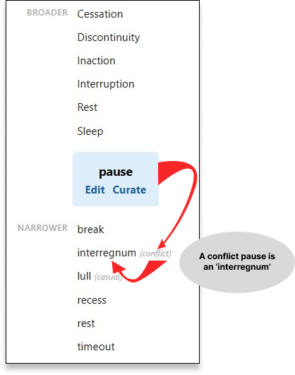
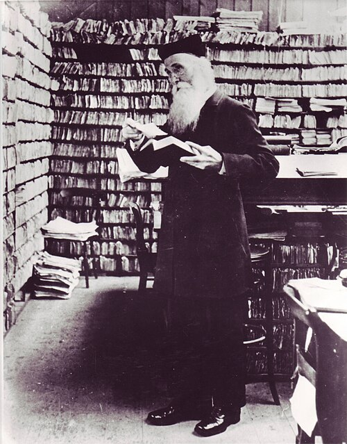
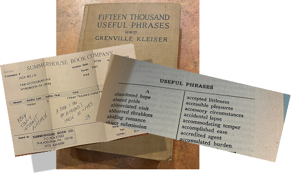

Welcome to Lexonomy
June 17, 2026 2:24PM
Table of Contents
Accessibility Statement Bugs and Limitations About
What Who Where Why When How How Much
Under the Hood Synonyms, Antonyms, Nature, and Parts-of-Speech Prime Words Connectors
Instructions Avatars
Quick Add Edit Curate Wish List
Images: Narrower Term Example James Murray Kleiser Book OED Slip Primes and Primitives Qualifiers
About
Lexonomy is...
- A hierarchical dictionary...
... founded on the principle that any concept in the developing mind can be 'defined' by two other terms, one that is broader and one that qualifies the broader term.
- A crowd-curated, completely unmediated web app, lexonomy.org:
The web app is completely open (no registration of any sort), and completely unmediated. Any user can create and edit the parent-child hierarchy and the qualifier words that comprise the dictionary. Only the complete removal of terms from the dictionary is protected (by administrative password). Note that public users can, however, delete 'relationships' between terms because this is key to crowd-sourcing the curation.
As a lookup tool, Lexonomy.org enables you to look up broader (less specific) and narrower (more specific) words for a given term. For instance, if you recall that there's a special word for a 'pause' in a conflict, but can't remember it, you could look up 'pause' and see more specialized terms:

Discoveries and Principles
The seed for Lexonomy was planted in 1983 (more below), had fits-and-starts in 2019, and the software implementation became a reality only with the help of artificial intelligence, from March to May of 2026. In the course of the creation, many observations and discoveries arose:
- The Development of Human Vocabulary
As the system was developed, it became clear that the primary mechanism of Lexonomy—concepts refining from one to another—was nothing less than the mechanism of the growth of vocabulary in the individual, developing human.
- Primes and Primitives
Semantic primes (also known as conceptual primitives) are a foundational concept in linguistics pioneered by Anna Wierzbicka and her colleague Cliff Goddard in 1972. Lexonomy arrives at a list with overlaps but a very different character: 13 words upon which all other language is derived: the 5 human senses, the 6 "W" questions, and the words 'yes' and 'no.'
- The First Word: 'no'
Preceding the software development, the discovery arose that the first word in human vocabulary—perhaps communication in all entities born of DNA—is 'no.'
- The First Concept: 'yes'
If a concept is the joining of two terms, then 'yes' was the first concept, wherein the brain learned the trick of abstraction... separating one thing from another... subtraction... the act of 'not'... on the notion of 'no' itself. And everything else in the mind might be explained as extension of this negation trick.
- Lexonomy Describes the Middleground of Vocabulary
At the root of the tree, prime terms belong to sensory input (smell...) and the cosmos (time, space, existence), and the mind works from there, combining terms in a somewhat tree-like simplicity. At the outer reaches of abstraction the relationships are as if multi-dimensional and richly intertwined. At that level everything is likely connected to everything, and the clarity of 'concept=broader(qualifier)' dissolves to "concept=concept X concept," more of a 'product' relationship than a superset/subset one.
- True Synonyms
Lexonomy seems to reveal that true synonyms—words that are completely interchangeable to the point that even when used in a college essay a professor couldn't objectively argue betwen the two—are fairly rare. For instance, 'yearly' and 'annual' don't seem to have any breathing room between them, do they? Well, in fact, you wouldn't expect to see an 'annual report' entitled 'yearly report,' would you. So, while it might be difficult to find a qualifier that sliced neatly between the two (other than perhaps 'formal'?)... they are not absolute synonyms in the world of Lexonomy.
- Polysemy... and Lexonomy's More Rigorous 'Lexophone'
In lingustics, the various senses of the word 'head' (physical body part, company leader, unit of livestock) are called polysemy (for multiple semantics) and have various definitions in dictionary. In Lexonomy, these three uses of the term are the same (!) concept. But consider two identically spelled words with thoroughly disconnected meanings, such as 'mole' (the animal), and 'mole' (the chemical measurement term). These two meanings were never connected in any way. But other instances had a connection at one time and that connection has dissolved completely over time. An example is 'fluke' (chance event, vs whale's tail). Apparently 'chance event' did evolve from an old idiom that invoked the whale's tail. But no connection is currenly perceivable, and no child could ever evolve one from the other! Both are polysemy with nary a trace of formative derivation. They are lexophones, with 'mole' being even more pure than 'fluke.'
- Lexoneme... the Smallest Space Between Concepts
Is 'mismatch' a pure synonym for 'disagreement'? In a conversation, I stated that there was a 'disagreement' between two sets of values. AI came back with a response about the 'mismatch.' And I immediately focused on the nuance between the two terms: disagreement implies action, or an actor, or an act; mismatch makes no such association and was the more correct term. This small gap, 'near rungs' on a ladder, I'm calling a 'lexoneme,' a pair of words with just the slightest qualification between them, one that Lexonomy strives to identify.
- Lexonomy Doesn't Explain Nature or Man-Made Terms
Those are simply not concepts, even if they often develop corresponding terms that are indeed conceptual. The are not the combining of two things in the brain. A 'frog' cannot be reduced to two existing terms; it might be a type of amphbian, but it is not uniquely distinguished from other amphibians by a single term. So too, with man's creations.
- Lexone... Concept from the Un-Conceptual
The word 'hammer' refers (first-and-foremost?) to the physical tool, but it is clearly a prominent member of conceptual space. We're using the term 'lexone' to denote such terms, whether man-made or nature-made, that gain conceptual standing.
What
- A crowd-sourced, hierarchical dictionary.
- Lexonomy is founded on a bold concept that any word can be identified by as few as two other words. One of those two words is a more general term, and one is a term that qualifies that more general term. So in the general topic of 'stop' there might be two, more specific terms, 'pause' and 'end.' A very specific word, 'interregnum' is based on the term 'pause,' with the qualifier 'conflict,' as shown above. Thus, "interregnum = conflict pause."
- Seeded with words from Roget's Thesaurus. We didn't use all of them since there's a lot of arcana, but it's a useful starting point.
- You can look up words, or contribute to the dictionary with these options:
- Quick Add: a simple page with three fields to enter any new entry into the dictionary, specifically intended for phone use.
- Edit: a more complex page for entering broader and narrower terms, and fits on a phone, but serious contributing should really be done on a full-screen desktop with the next two options.
- Curate: a drag-and-drop categorizing tool to organize the hierarchy of a term. This is generally used on whole topics from Roget's Thesaurus, which range from 10-50 words.
- Inheritance: the equivalent of Curate, but a 3-column tool that's not as quick and visual as Curate, but lets you build one level deeper of word nesting.
Who
- Lexonomy was created by Jack Bellis, of Philadelphia, PA USA, with...
- Software development 100% by Claude.ai of Anthropic.com. I had to direct Claude, move files, deploy, and massage the database, but Claude did every line of code. More, below, in 'How.'
- Peter Mark Roget (1779–1869), author of Roget's Thesaurus. More, below, in 'How.'
- Sir James Murray (1837-1915) (image at end), who created the Oxford English Dictionary. His methodology of collecting slips of paper (image at end), each with substantiation for the usage of a word, is part and parcel of our concept... soliciting teeny-weenie contributions that build our corpus.
- Anna Wierzbicka and her colleague Cliff Goddard, who in 1972, formalized the concept of Semantic primes.
- I am humbled and amazed to see in the Wikipedia accounting of the thesaurus, that I am following, in turn with Roget, on the work apparently of Liebniz and Aristotle.
Sir James Murray with his collection of slips:

Where
Why
- Now it gets interesting. At some point I started noticing that the meanings of words are hierarchical. I can recall at one time, in my techwriting years, noticing that it was important to properly choose between the words 'tap,' 'click,' 'choose,' and 'select'... and that some were too specific... and that the broader ones were sometimes broader even than one another. I don't know if that's the earliest time this happened, but it's one of the first.
- Eventually, doing many crossword puzzles, I noticed the wonderful economy of words in the clues. Complex terms were often reduced to one or two other words. When a clue is one word, it's probably just a synonym, nothing enlightening there. But two-word clues reveal a pattern, or at least beg a question: can any term be targeted by two words? If they're hierarchical, sure. Any word is the 'product of' a more general word and some word that qualifies it to a more specific use. Surely the human brain must need some sort of scaffolding on which to organize this massive jumble of terms that we deploy so precisely to slice-and-dice the world of our thoughts, which we then spill out onto pixels and ink.
- This eventually became Bellis's Law: any word can be identified by two other words, a broader term and a qualifier. The pieces of this triad, "term = [broad term], [qualifier]" I'm calling 'cepts,' suggested by the constituent part of the word con-cept, to bring together two ideas. The Lexonomy is unavoidably visualized as a simple multi-level outline of words, as shown above in the Lookup example. But the human brain is so richly networked, that every "term" in my little equation, above, becomes a broader term and/or a qualifier. So 'cept' is a bit of a fleeting notion... one term's qualifier becomes another term's broader. But let's move on.
- Why not just ask Google? You could, and still might. But Lexonomy lets you browse every which way among the mental space of any concept.
When
- I started trying to make Lexonomy in 2010, manually extracting the public domain content of Roget's Thesaurus, chopping its 700 or so topics apart and arranging them into a Google "site," where I was surprised to see that the content is still present. I realized it was pointless.
- And then in February of 2026 I started experimenting with AI, Claude.ai, to be specific. From extensive experiments with Claude, it became clear to me that he was superintelligent—I have zero trouble making that assessment— superfast, superprogrammer. And it took me weeks, but I finally asked myself, "can't I use Claude to make Lexonomy?" I believe it took 3 weeks, and about 200 prompts... and he did.
- In my lengthy discussions with Claude, which I've offloaded from Claude.ai for posterity, we discovered that the inspiration for Lexonomy goes even further back. I proposed further seeding Lexonomy with a list of two-word phrases from another word book, Grenville Kleiser's Fifteen Thousand Useful Phrases (image at end). I left my receipt in that book, and it's from May 2, 1995. It was just after the World Wide Web was getting up to speed. And that in turn meant that you could type into it almost anything, such as a book title you've always wondered about, and maybe learn about it or even buy it. Well I did buy it, because I'd been fascinated about that book after pulling it off of a bookshelp at a friend's house, and always remembered the name. And on a hand-written note on that very receipt, from Summerhouse Book Company in Philadelphia, I wrote "Very early internet purchase, a book I saw at a friend's house in 1983."
The book that might have planted the seed for a hierarchical dictionary, Lexonomy, with my 1983 recollection:

- I have no idea how long it took me to start formulating my law of two-word definitions, after getting transfixed by Kleiser's 45 pages (!) of two-word 'useful phrases,' but it's entirely reasonable to think of 1983 as the year that Lexonomy started. Maybe the seedling hadn't even sprouted, but the land was starting to be cultivated. Forty-three years, that's when Lexonomy started... and Claude essentially built it in 3 weeks.
How
- The public domain contents of the thesaurus was ingested by Claude and extensively filtered and cleaned up to seed a good starting point for Lexonomy, rather than asking 'the crowd' to start from a blank slate.
- Roget had about 1000 groups of terms, which Lexonomy calls categories, and three levels of categorization above these terms. The categories would have gotten in the way of crowdsourcing the hierarchy so that level was omitted; none of Roget's classes, subclasses, or numbered section headings are in Lexonomy. Claude also recommended, and I took his recommendation to strip out lots of arcana (rackabones?), phrases, Latin, and so on.
- AI Curation: I was going to rely only on crowdsourcing for the broader/narrower relationships, but then I realized... hold on a second, isn't Claude pretty good with language? So I asked Claude about taking a pass at creating the broader/narrower relationships and he literally said, "just ask." So I had him do it, and there are now crude groupings within almost every one of our 700 categories. It was amazing to see. This brings up the question...
- Why not just have AI totally create the hierarchy?
- Claude Conversation Instances: The first two Claude conversations lasted almost two weeks each, totalling 122,000 words. The first one started to slow down under its own weight. Apparently each instance maintains an ongoing context, which in turn does amount to familiarity with the project and resembles a definite nuance of comprehension that has to be reconstructed in a new instance. The first instance provided a lengthy "transfer of knowledge" project summary which was then pasted into the second instance, along with the few HTML and JS files that the first instance created. The second instance had zero trouble picking up where it was left off. The whole thing was as staggeringly impressive as my previous experiments with Claude. I'll be writing up an extensive article on the experience of creating Lexonomy with Claude. At this writing, I'm in 'Claude 49'... yes, the 49th conversation instance.
- Resulting Web App: The result is an app that
- Phone users can use to look up terms. It's already rich with one flat level of synonyms and Claude's pass at creating hierarchy within them. A quick look at his groupings seems to show that the human touch can add a lot. I'll have to evaluate more.
- Quick Add: a phone page on which you can submit an entry to Lexonomy. And when I say "submit," I mean include on the fly with no moderator in the middle. Each entry you make, of term/broader/qualifier is the modern, Lexonomy equivalent of one the the Oxford English Dictionary's (OED) 'slips' (image at end) from which Sir Murray created the OED. So we call each submission—each row in the database—a Murray Slip! And you created it!
- Curation: Serious curation can be done on a large screen. The drag-and-drop is pretty cool, mostly in the tree.
- Games: There are 6 games you can play to help curate Lexonomy, deciding on best qualifiers, reconciling competing opinions and so on. They're a challengine alternative to Wordle for people who want to do a puzzle where the answer is only in one's on brain.
An actual Sir James Murray OED slip. This is what one of Murray's 3.5 million slips looks like:

How Much
- Free, other than the cost of getting on the Web.
- No spam, currently no login, no password, no secret handshake, no nothin. If it gets trashed I'll do a restore and do what has to be done.
'Under the Hood'
Lexonomy uses a simple database that is fundamentally 3 fields:
- Parent Term
- Term
- Qualifier
There are several other fields that manage the game outputs when a worklist item is created, and disposition of wrorklist items but they have no influence on the dictionary, so to speak. In other words, the theory is captured very purely by the 'schema' to use the technical word. There are only these contrivances:
- Orphans: The pseudo-value '[orphan]' is placed in the Parent Term field when a user performs an action that would completely remove the last occurence of a term from Lexonomy, whether that term was used as a parent or term or qualifier. These orphans appear in the Orphans worklist for anyone to place in a good home, whether foster care or permanent.
- Variants
- Variant is the term used as a catchall for words that are the identical concept as another term but have not yet been more carefully identified with one of the following choices.
- Synonyms: the pseudo-value [synonym] is placed in the qualifier field when users deem a term to be completely interchangeable with another. The system arbitrarily regards one term in a synonym relationship as the parent... simply based on what term happened to be the term being edited or curated... the 'main term' one might say. So if I'm working on 'blend' and see 'mix' as one of its children/narrower terms, I might decide they're synonyms (I emphasize, completely interchangeable), I can choose the autosuggested choice [synonym] for 'mix's qualifier. Thereafter, 'blend' is the parent, but only arbitrarily so, by virtue of editing order. Note that synonyms shouldn't have children... because their existence would imply a distinction from their counterpart, a distinction that surely must reveal a strong qualifier that could be identified.
- Nouns, Adjectives, etc: In general, it's better to declare different parts of speech simply as one of these variants rather than a separate concept. How do we make the choice, when to provide some other qualifier than simply [noun], for instance? I don't have an exact answer, but it might be a moot point. The question is actually only, do you have a better qualifier??? Nouns and adjectives can have their own children... whereas synonyms shouldn't.
- Not: Ah, the real troublemaker. Lexonomy has as its theoretical foundation that 'no' is the fundamental operation that starts vocabulary development in the growing mind. And Claude insists (don't laugh) that negation is the soul of vocabulary propagation (my words, his observation). Anyway, somewhere approaching 50% of—but I guarantee you not exceeding—vocabulary is probably just the negation of the other near half. In Lexonomy, opposites, antonyms, are the same concept... in a way. Lexonomy has no answer for this antimatter capability of the brain. It's automatic. It's the magic qualifier, the super qualifier. But at the outer reaches of the tree of words that Lexonomy proposes, the brain automatically uses every word (!) as a qualifier for every other word. That, just like the enormity of data centers proliferating right now in 2026, is probably the miracle of human-like thought. Assign '[not]' whereever you deem it the right qualifier... but don't remove antonyms from a concept just because they look like invaders... they're not.
Roget vs. Lexonomy
Roget produced a book of 1042 topics, each with dozens to hundreds of terms. (In Lexonomy, we've settled on calling those original topics 'categories.') And he did have hierarchy, but it was totally about abstraction, whereas Lexonomy is all about development of concepts in the brain.
And Roget did have hierarchy, 6 levels, in fact... as you can see below. But it was all about the general commonality between the words, then down to parts of speech. Here is his first entry:
| 1 |
Class |
CLASS I: WORDS EXPRESSING ABSTRACT RELATIONS |
| 2 |
Section |
SECTION I. EXISTENCE |
| 3 |
Subsection |
1.BEING, IN THE ABSTRACT |
| 4 |
Category |
#1. Existence |
| 5 |
Part of Speech |
N. existence, being, entity, ens...
494 actual existence. presence &c. (existence in space)
186 coexistence &c.
V. exist, be; have being...
Adj. existing &c. v.; existent, under the sun;...
Adv. actually &c. adj.; in fact, in point of fact,...
Phr. ens rationis [Lat.]; ergo sum cogito [Lat.],...
|
| 6 |
Cross-refs |
(the 494 and 186, above) |
So where Roget will have ...
- #906. Benevolence —
N. benevolence, Christian charity; God's love, God's grace; good will; philanthropy &c.
910 unselfishness &c.
942 good nature, good feeling, good wishes; kindness, kindliness &c. adj.; loving-kindness, benignity, ...
... Lexonomy is about developmental genealogy, looking for the simplest word in such a group that a child might learn first, and then deriving more and more sophisticated terms. Our tree might have this progression:
- good
- kind
- unselfish
- charity
- benevolent
- generosity
- altruist
So in Lexonomy, "benevolence" is hardly a top-level term... it is developed over years of language learning from infancy to perhaps young adulthood. And note that Lexonomy will generally use the verb and adjective forms. Nouns are more of an abstraction, somewhat of an extreme accomplishment of the human brain. The actions and descriptions (adjectives) are closer to the root of our tree.
Synonyms, Antonyms, Nature, and Parts-of-Speech
- Parts-of-speech: when you enter qualifiers, you may wonder if you're supposed to use adjectives or nouns, or whatever... or try to re-use existing qualifier spellings, that sort of thing. And that's good instinct. But our design decision when creating Lexonomy was that parts of speech should be de-emphasized when they don't result in significantly separate meanings. Lexonomy is about concepts. Parts of speech are sometimes just a variant on any concept. (One could say that the noun for any concept is that concept qualified by 'thing.' And the verb for any concept is that concept qualifed by 'do.') Claude.ai has done two different passes through Roget's original set of words, and on the second pass used the qualifier, "nominal" to identify the noun form of verbs. Sometimes the noun form has a broad ontology of new senses of a word. For instance "motion" vs. "move" has a rich catalog of meanings, so in this case "part of speech" is important and valuable. In other cases it might not be as significant. Just enter whatever occurs to you as the right way to qualify something, without excessive regard for part-of-speech. I fully expect to have AI try to clean that up later... seriously. Claude and I talked about it and he's optimistic. In fact, since AI is founded first-and-foremost I seem to understand, it is words (not software code) that is—or should be—AI's strength. It certainly will have the speed required to review tens of thousands of sloppy, human words and disambiguate them.
- Nouns vs Adjectives and Verbs: Roget's categories, which seed Lexonomy, are almost all phrased as nouns — 'youth' instead of 'young,' 'cessation' instead of 'stop.' Lexonomy leans toward adjective and verb forms. The reason is subtle: young is closer to lived experience than youth. Youth is a categorization — one step of abstraction away from life. Lexonomy is organized around how meaning forms in the mind, which is from living outward, not from categories inward.
- Synonyms: if all goes as planned, synonyms are simply words with identical parents and no difference in qualifiers. I suppose that means either no qualifiers or identical qualifiers. (Hmmm, did we account for similar qualifiers? Don't know.) A lot of things will be learned about our Lookup logic and functionality after some beta usage. In Lexonomy we don't really try to claim that any two terms are synonyms, instead leaving that to the dictionary folks. It's as if we're saying "all we have here is evidence, not a verdict." Notice I said "if all goes as planned."
- Antonyms: again, if all goes as planned, antonyms will be built into the Lexonomy premise itself: they will be the qualification of any concept by the word "not". Let's see how THAT works out! So we shouldn't have to provide any instruction or rules to follow. Maybe like qualifiers, Claude will at some future time clean up all entries of the qualifiers 'no' and 'not' to all say 'no.'
- Natural Objects are not subject to the whims of Lexonomy. The many-leveled taxonomy of the natural world is much deeper than any of us are likely to categorize any of our concepts. And I have thought through trying to find a 'crossword' (two-word) combination to identify various species, and it doesn't work. Consider 'elephant.' Tusked beast? That could be a rhino. They are not human contrivances, not concepts. 'Nuff said.
Prime Words
If words are in fact hierarchical, with parent-child relationships, then some words must be at the top of the genealogy, right? That's my theory, and I call them 'prime word,' analogous to prime numbers. They are words that are not able to be expressed clearly relative to a broader term. Children learn them mostly by example, but that's how they learn almost all words, so that's probably just an interesting observation. Attempts to define them usually go in linguistic circles... but that's fine... that's what the brain is all about.
My Original Guess at Primes, 2019
Here's my list of prime words, formulated in approximately 2019 when I first tried manually curating a hierarchy in Google Sites:
| a |
feel |
me |
see |
| about |
for |
my |
so |
| and |
from |
no |
than |
| answer |
good/bad |
not |
their |
| as |
happen |
of |
then |
| at |
have |
off |
thing |
| big/small |
hear |
or |
way |
| but |
I |
part |
weather |
| by |
if |
place |
when |
| can |
is |
question |
which |
| do |
like |
same/different |
you |
The 13 Primes, After Lexonomy Matured, 2026
The following diagram shows the primes and primitives derived from Lexonomy, thinking through the likely mechanism of development of the earliest vocabulary terms... based on imagining a parent's words to a newborn.

Notice the green highlights, where the mind 'bottoms out' at the physical world. There are the 5 traditional senses
- smell
- taste
- touch
- see
- hear...
and the classical questions that each has a more abstract word in the mature mind:
- do (how?)
- thing (what?)
- be (why?)
- you (who?)
- here (where?)
- now (when?).
To these 11 Lexonomy adds...
- the first word, 'no,' and
- the first concept, 'yes,' both of which get emeritus status in the list of primes.
That's the list of primes—true primes—according to Lexonomy. Only 13 terms that defy decomposition. Even seemingly cloud-like words such as 'by' can be factored, under enough curatorial pressure, into, for instance: by=when(must). even the seemingly (!) unsophisticated toddler brain is taking the thousands of times it hears 'by,' and realizing that it concerns matters of 'when' (whether with a sense of time or condition [if]), and combines it with matters of "necessity."
Everything beyond the 13 primes is a matter of abstraction through combination.
Semantic Primitives: Wierzbicka (1972) vs Bellis
Wierzbicka et al started with 14 primes/primitives. In Lexonomy, I arrived eventually at 13... corresponding to the 5 human senses, and the traditional "who/what/where..." questions, and the first word ('no'), and first concept ('yes'). How do they compare?
A structural comparison of two independently-derived primitive sets exact / direct near match only in Wierzbicka only in Bellis
| Wierzbicka 1972 |
Lexonomy |
Comments |
| 'you' |
Exact match |
A mother's most frequently repeated first word? No mystery we overlap even with different foundations. |
| 'say' |
1 level different |
In Lexonomy, but 1 level abstracted: 'do'>'say'. |
| 'good' |
1 level different |
In Lexonomy, but 1 level abstracted: 'be'>'good'. |
| 'want/not want' |
1 level different |
In Lexonomy, but one level abstracted: 'do'>'want'. |
| 'think of' |
1 level different |
In Lexonomy, but 1 level abstracted: (from 'do'>'think') |
| 'this' |
1 level different |
In Lexonomy, but one level abstracted, 'thing'>'this'. |
| 'become' |
'be' |
Agreement in principle, but not term. Lexonomy believes a child learns 'become' much later. |
| 'I' |
2 levels different |
2 levels abstracted (from 'you'>'me'>'I'). Lexonomy tries to identify a child's first words. As such, 'you' is the root of this line of cognition (who)—of modeling the curious world—and a child develops the vocabulary word for oneself ('I') significantly later... deriving it from 'you.' |
| 'someone' |
2 levels different |
Lexonomy originally had 'someone' one step up from 'you' in the 'who' branch of the tree, but then relegated it to a longer list of terms derived from people, or whatever term a child might first develop for the 'third person' collectively: 'you'>'people'>'someone'. |
| 'part of' |
2 levels different ('part') |
Lexonomy has 'thing'>'this'>'part'. |
| 'something' |
2 levels different ('thing') |
Match in principle, but Lexonomy presumes the shorter word must be learned first. |
| 'like' |
<not included> |
Lexonomy dropped 'feel' (catch-all for emotions) from its prime/primitives tree late in the game, after noticing that emotions might correspond to 'thinking' that has persistence or even 'residue,' as the term originally came up in a discussion with Claude. As such 'like' is not currently on our diagram even though a mother asks a child 'like' questions from the moment of birth. |
| 'imagine' |
<not included> |
Very different interpretation... an infant might start imagining even in the womb, but their vocabulary doesn't articulate such a notion for quite some time. |
| <not included> |
'do' |
One of Lexonomy's core observations... the primacy of motion or action as the innate origin of animality — the organism acts before it speaks or thinks. |
| <not included> |
here |
Only in Lexonomy. |
| <not included> |
now |
Only in Lexonomy. |
| <not included> |
'no' |
Very different. 'No' has a special place in Lexonomy, proposed as the original mechanism of abstraction by which the brain learns abstraction. |
| 'see' and 'hear' added to 1972 list in 1989 |
see, hear, touch, smell, taste |
Lexonomy treats all five as input channels from the start, arrived at by architectural reasoning rather than their resistance to being defined. |
Key structural difference: Wierzbicka's method is reductive paraphrase — primitives are discovered when definitions fail. Bellis's method is architectural — primitives are the irreducible modes of contact between organism and world. Wierzbicka's list is the primitives of a speaking mind; Lexonomy's are the primitives of an organism.
Primes vs. Primitives
To me, it can be an objective matter what constitutes a 'prime'... a word that is indivisible by others... simply cannot be factored. And Lexonomy declares 13. But 'primitive,' which sounds one degree less absolute, seems less objective after working through many decompositions in the course of working on Lexonomy and curating its tree. Clearly some words are more basic than, for instance 'personality,' or 'obfuscation.' But where is the line between 'person' and 'individual'? I think that 'primitive' is just a qualitative judgment.
Decomposing (Factoring) the Connector Words
Among the primitives, whether from my notions of such a list, or Wierzbicka or others, there are these troublesome, short little words like 'and' and 'for'... that seem immune to curation. But as my pencil has gotten sharper, I've started to work out how some of them might be qualified, built upon other early words.
Subsets versus Products And it seems that there's a bit of a difference between Lexonomy's general notion of qualification as 'subsetting,' and how these connector words are construed in the mind. They seem to be more like 'products' of two factors, moreso than a narrowing from one idea to another. And that same phenomenon, products versus subsets, seems like it might be the case as the vocabulary matures... toward the outer edge of the mental corpus (not my word, Claude's)... where terms are endlessly intertwined moreso than neat-and-simple two-dimensional sets.
If you'll refer to our Primitives Diagram, here's what I've worked out:
From the 'thing' Branch of Primes
| this |
= [thing (here)] |
| a |
= [thing (any)] |
| the |
= [a (one)] |
| than |
= [thing (not)] |
| one |
= [a (only)] |
| and |
= [this (this)] |
| as |
= [thing (of)] |
| all |
= [thing (every)] |
| of |
= [thing (this)] |
I'm especially proud of 'the' turning out to be 'a (one)'... a play-on-words of the idiom A-one, altogether appropriate for the appelation (?), 'the,' denoting not just any entity, but the preeminent one.
From the 'be' Branch of Primes
| if |
= be (is) |
| or |
= be (not) |
| so |
= be (can) |
| but |
= be (if) |
| why |
= be (think) |
| else |
= if (not) |
| have |
= here (thing) |
| because |
= is (why) |
| happen |
= is (do) |
| maybe |
= is (if) |
From the 'now' Branch of Primes
| at |
= when (be) |
| by |
= when (must) |
| then |
= when (if) |
| from |
= where (be) |
| when |
= now (not) |
Game Logic
There are 6 games and 3 of them directly create worklists items if your answer leaves some sort of loose end, or undecided matter, such as two different opinions on a qualifier. A fourth game will also result in a worklist item in the Orphans worklist, if the action you took would result in the removal of the very last instance of a term in Lexonomy.
The following topics describe the games technical aspects.
Qualify
Pool Source
All concept where the qualifier = '' and session_id does not start with play_. No worklist column filter.
Screen options
- Text input + Submit — player types a qualifying word (typeahead wired)
- [variant] → dropdown — expands to: noun / verb / adjective / adverb / not / synonym / variant (unspecified). Each saves a bracketed qualifier.
- Skip — no action
Worklist impact: none. No column stamped.
Current size: Enormous. The vast majority of slips carry no qualifier at all (empty string). Bracket-qualified slips ([noun], [n/a], [synonym], etc.) are excluded — they're treated as resolved. Will outlast every other pool by years.
Depletion: Drains as qualifiers are entered via game votes or Build/Edit. No floor — new slips added without qualifiers re-enter the pool immediately.
Replenishment: Any new unqualified slip is eligible.
Note: Inversely correlated with Specify — as Qualify shrinks, Specify grows. The two pools trade mass as the corpus matures.
Parent
Pool Source
All concepts where session_id starts with ai_, roget, roget_clean, or roget_hier, and gm_parent IS NULL. Human-entered slips excluded. Shuffled.
Screen options
- ✓ Looks right — relationship confirmed
- ✗ Wrong parent → reveals sub-options:
- Reverse the direction
- ≈ Synonym of parent — marks as synonym, keeps slip with
qualifier='[synonym]'
- No relation — remove the relationship
- Skip or Not Applicable
- Skip (main screen)
Worklist impact: Deleted concepts may create Immaculate Concept-ion worklist items (items that have no broader term pointing to them).
Current size: Finite. Only ai_, roget, roget_clean, roget_hier slips with gm_parent IS NULL are eligible. Human-entered slips never enter this pool.
Depletion: Drains permanently as slips are confirmed, reversed, or removed. Once all Roget/AI-origin slips are reviewed, this pool is permanently empty until the next AI import batch.
Replenishment: None without a new import. This is the only pool with a definite terminus.
Gap
Pool Source
All concepts with 5+ children. One child selected at random per qualifying parent. Excludes slips where gm_gap = 'direct' or gm_gap = 'gap_flagged'. Shuffled.
Screen Options
- Direct is right — no intermediate needed
- Needs a step — flags this pair as having a gap
- Skip
Worklist impact: gm_gap = 'gap_flagged' feeds Parent-Child Gaps worklist. Both 'direct' and 'gap_flagged' excluded from game pool.
Current size: One entry per parent with 5+ children (one random child selected per qualifying parent at build time).
Depletion: Acting on one child stamps that slip and excludes it from the pool, but the parent remains eligible until all its children are stamped. Pool grows with corpus as new parents reach the 5-child threshold.
Replenishment: Self-replenishing. New slips added under qualifying parents enter immediately.
Symilar
Pool Source
Children of the same parent where: both words are childless, both slips are unqualified (qualifier = '' or identical qualifier) under that parent, and gm_symilar IS NULL. Groups by parent + qualifier. Pairs capped at 4 per parent, 200 total. Shuffled.
Screen Options
- ✓ Yes — same thing — fully interchangeable
- ✗ No — they're distinct — meaningful difference exists
- Skip
Worklist impact: "No" feeds the Needs Qualifier worklist.
Current size: Capped at 200 pairs. Currently moderate — depends on how many childless co-children share a parent without qualifiers.
Depletion: gm_symilar stamps drain pairs. Also shrinks indirectly as Qualify game adds qualifiers, which groups co-children more specifically and reduces pairing candidates.
Replenishment: New unqualified slips under the same parent regenerate pairs. Inversely correlated with qualifier density.
Specify
Pool Source
All concepts where qualifier is non-empty and non-bracket, gm_specify IS NULL, play_ excluded, and the parent has 3+ other children to serve as distractors. Player is shown the parent and qualifier and must identify the correct child from choices.
Screen options
- [child word buttons] — player taps what they think the qualifier points to
- Correct — auto-advances after 2s (or tap Next)
- Incorrect — shows "Added to Difficult Qualifiers worklist"; Continue button
- ✗ They're all bad — none of the choices are right; qualifier itself is problematic
- Skip
Worklist impact: Wrong pick feeds the Difficult Qualifiers worklist.
Current size: Currently thin — requires qualified, non-bracket slips with 3+ siblings as distractors. Few such slips exist early in curation.
Depletion: gm_specify stamps drain eligible slips.
Replenishment: Grows directly as the Qualify pool shrinks. Every new qualifier added creates a potential Specify candidate. This pool becomes dominant mid-curation.
Misfit
Pool Source
Concepts with 3+ children, excluding parents already acted on this session (misfitActedParents), excluding child–parent pairs where gm_misfit IS NOT NULL. Up to 5 children shown per parent. Shuffled.
Screen options
- [child word buttons] — player taps which child doesn't belong
- None — they all fit — stamps all children as reviewed
- Skip
Last-instance check: after player picks a word, asgn is scanned for any other slip where the word appears as child (a) or parent (b), excluding the current slip. If none found — last-instance path taken.
Worklist impact: Last-instance picks feed the Orphans worklist.
Current size: Large and persistent. Any parent with 3+ children qualifies; corpus currently has many such parents.
Depletion: gm_misfit stamps on individual child–parent pairs provide durable exclusion. misfitActedParents (session-only) is the short-term exclusion — it resets on every page reload.
Replenishment: Hardest pool to exhaust. Acted parents re-enter the pool on reload unless every child carries a gm_misfit stamp. Grows with corpus.
So Use It!
It's in its nascent › early › new days so the lookup is only as good as the few entries that have been submitted. But in exchange for that newness, you can take pride in being an early contributor. At this point, pride alone will have to be your reward — I don't want to slow it down with registration or tying user identity to specific curation.
Instructions/User Manual
Qualifiers and Broader/Narrower, Part 1
There are two parts to the magic of Lexonomy:
- Declaring that one term is broader/narrower than another.
- Finding a word to describe that relationship
Keep saying this to yourself, as I had to making this whole system: if it were easy anyone could do it.

Qualifiers and Broader/Narrower, Part 2: A Great Example
Bland, boring, tedious: how do you put this into Lexonomy? An early tester tried to put this into Lexonomy.
- First ask yourself, which of the three is the broadest?
- Let's put it this way: which of the three would a child learn first? Boring!
- Pretty obvious once you think of it. No kid learns 'bland' or 'tedious' early, but they do learn borrrr-ing.
Next, are tedious and bland part of the same family... related... same general idea? Yes they are. Roget thought they were and put them in a category, I think.
Next, how would you qualify or narrow boring to get to bland? What would a crossword-puzzle, two-word clue be to get you to bland... but using boring??? 'Boring taste' or 'boring flavor.' Let's arbitrarily choose 'flavor.' So the qualifier is 'flavor.'
Bland= boring flavor. Would someone get the answer in a crossword puzzle? I think they would.
And 'tedious'? How would you qualify boring to get to tedious? 'Labor' or 'effort'... boring labor, boring effort... maybe 'work'... boring work.
- Which two-word clue would be best in a crossword? Boring work.
- Imagine you're writing a book of some other message, would you really use the two words interchangeably? Always a possibility... don't talk yourself into qualifiers.
- If not, when would
Tedious= boring work.
But Lexonomy is democratic. Perhaps you have THE right answer.
Avatars and Visitors
Lexonomy does not require creating an account or logging in. Our goal, until proven impractical, is to allow anonymous and completely free editing, other than deletions, which are protected with a password. Email me jackbellis@hotmail.com if you'd like the password. In exchange for this openness, there's no contribution tracking, only a randomly generated avatar name for each visitor. Like some other web systems that have public data that might be associated with a person or business, we allow you to 'claim' your avatar, which simply means entering any information you'd like... to identify yourself. It's one simple text input box with no rules. You can enter your genuine contact information such as an email or website, or just a note to inform others who you are. Offensive information will be deleted.
Claiming your avatar: Click the avatar name in the toolbar at the top of the screen.
Listing visitors who have claimed their avatar: Click the avatar name in the toolbar at the top of the screen.
Technical Implementation
How your Avatar Is Remembered
Your avatar name is stored in your browser's local storage — a permanent store that survives page refreshes, tab closes, browser restarts, and even OS restarts. It is not a cookie, and clearing your browser cache alone will not affect it.
When a New Avatar Is Generated
- You clear your browser's site data (the "local storage" store specifically)
- You use a different browser on the same machine (Chrome and Firefox each have their own separate local storage)
- You use a private / incognito window (local storage is wiped when that window closes)
- You visit on a new device or a fresh browser profile
Avatar Persistence
Avatars persist across...
- Page refreshes
- Closing and reopening the tab or browser
- OS restarts
- Clearing the browser cache (cache and local storage are separate stores)
The 3 Storage Levels of Browser Software
| Store |
Lifetime |
Shared across tabs? |
| Local storage |
Permanent (until cleared) |
Yes |
| Session storage |
One tab, until closed |
No |
| Cache |
Until cleared or expired |
Yes |
Lookup
- What it does: lets anyone harvest the fruit of Lexonomy's labor.
- If it requires any explanation at all, I have failed.
- Can I blame any of it on Claude... Claude and I have failed??? No, not really. He did in hours what I have imagined since either 1983 or 2010.
Build
Quick Add
- What it does: enables you to add a new entry to Lexonomy with the least distraction.
- When/why to use it: on the spur-of-the-moment, on a phone in particular, when you notice a pair of words that have a relationship and you think it might not be in Lexonomy already.
- As you type in a field, it will show existing terms.
- Adding a qualifier is often the harder part. See our qualifier help diagram and section.
Edit
- What it does: enables you to do more extensive additions than the one-and-done Quick Add but is really a compromise compared to using the full-screen Curate which shows you very visually the whole set of relationships in a category.
- When/why to use it: if for some reason you want to do more than one-word editing and you're not near a desktop.
- To do the initial grouping of terms in a category, use the full-screen Curate instead.
- Some features require a password because they risk more serious changes (or loss) of the data. Email me if you're interested.
Game
- What it does: lets you kill time by helping build Lexonomy.
- After 12 game pages or rooms, you get a report on your session showing decisions you made and how they might have changed the data or added 'to-do' items to worklists. Closing the Complete message just repeats the cycle.
- Selecting Level Up explains that you can move on to reviewing worklists and starts you with a fun one, Difficult Qualifiers.
- You can 'pin' any game that you might like, to have it repeat just that one game.
- After any game page, you can re-visit the terms that were in the question by looking at Lookup>History. If you wanted to change your mind, you can click the respective term in History. Worklist items might stay but there's no harm in that.
Specify Game
The Specify game shows you a term and one of its qualifiers, such as "practice(repeat)" and asks you to pick which of several possible concepts are specified by that combination.
- Which term is specified by … image (visual)
- Match: If you click the term already in the database for that combination, a confirmation message appears and you are advanced to the next game.
- Difference: If you choose a different term than the one already 'qualified' by 'repeat' (in the example above), your choice gets added as a work item in the worklist Difficult Qualifiers.
Qualify Game
This game challenges you to do the hardest job in Lexonomy: thinking of a word that narrows one to another.
- What word makes ‘decrease’ more specific to mean ‘abatement’?
- Variant: For word pairs that aren't really different concepts but just different forms, click Variant and choose from the preset options. Square brackets [ ] indicate such pseudo-qualifiers.
- ANTONYMS: until or unless an antonym gets its own list of child terms, it's actually just a variant to Lexonomy... select the Variant button and choose [not].
Parent Game
The Parent game asks you for a yes/no confirmation of a parent-child (broader-narrower) relationship:
- Is ‘change’ the right broader term for ‘reform’?
- If you select "Wrong Parent," you have these options:
- Reverse: makes the second term ('reform' above) the parent of 'change.'
- Synonym: indicates the second term as a synonym of the first (by putting in a qualifier of [synonym].
- No relation: removes the parent-child relationship from the database... no moderator will question your work. And unlike some of the games, this decision doesn't even result in a worklist entry. If your 'deletion' happens to be the last instance of a term in all of Lexonomy, it won't be completely deleted.
Gap Game
The Gap game asks you to confirm if parent-child relationships are possibly bridging too far:
- Is there a missing level between ‘direction’ and ‘trend’, like person>WORKER>fireman?
- If you answer "Needs a Step," the pair of words is added to the Gaps worklist.
Symilar Game
The Symilar game is about synonyms. But we use the term 'symilar' in Lexonomy to indicate that words might have the identical parent, and no qualifiers (or identical qualifiers)... but that's not necessarily a verdict that they're interchangeable. They might simply not have been addressed by any curator yet. And they might have been accidentally given identical qualifiers by multiple users who didn't notice the overlap. So this game tries to check such things.
- Are these completely interchangeable?
- If you say "No, not interchangeable" the pair is added to the Needs Qualifier worklist.
Misfit Game
The Misfit game asks you for a multiple-choice confirmation of several parent-child (broader-narrower) relationships at once:
- Is there a term below that seems least like a kind/subset of…
- If any of them are not really derivatives of the main term in some way, shape, or form... click that term and its parent-child relationship will be removed. Not the words, just their connection to each other. That precise action is not even reviewed... you're the curator.
- If you happen to delete a parent-child relationship that includs the last instance of a word anywhere in Lexonomy, that term will be added as a worklist item in the Orphans worklist.
Curate
- What it does: power editing.
- When/why: if you really get a kick out of the Lexonomy concept and you want to try the heavy lifting... organizing a whole topic, usually one of the full sets of words from Roget's categories.
- Curate (vs. Inheritance) is strongest for almost every situation. It evolved from the less visual Inheritance function, which seems to have only one distinct benefit now: the ability to do three levels of specification in one screen. (Multiple levels could be done in Curate by restarting that page from a lower level term... or at least that's what would make sense. Try it and let us know. This is virgin code territory.)
- Some features require a password because they risk more serious changes (or loss) of the data. Email me if you're interested.
Advice and Examples for Curating
This Is Hard
This is what it's all about. Don't mistake some seemingly impossible curation for failure. Vagueness, intricacy, looping, bad or incomplete software design, bad data... yes, these are all realities of the work. If the theory and exercising of it is a failure, so it will be... but it won't be from the challenges along the way.
You are doing something that, it would appear, has never been done. Roget worked on this for decades and only got a flat list. We'll do better.
Data Updating: RELOAD THE WEB PAGE
The software doesn't accommodate every action you want to do. If you are confused that something has not updated... reload the web page. Not every single thing you touch will be perfectly reflected on subsequent screens. (This is somehow a seeming Achille's Heel of my AI coding partner, Claude.ai. I've asked him many times to work on this.)
How to Even Start
- Play the games. After completing a round, consider taking the option to 'level up,' which prompts you to work on perhaps our most enticing worklist: Competing Qualifiers.
- Look at other worklists and try to help pare them down.
- When you see an interesting two-word clue in a crossword puzzle see if the answer is already in Lexonomy and how it's structured, meaning what it's parent(qualifier) set is. Maybe the crossword clue is better. Edit it.
Circularity
When you try to add qualifiers, you'll see circularity. For instance consider 'precise' and 'accurate,' both children under 'correct.' Their qualifiers might reference each other: precise=correct(accurate) and accurate=correct(precise). Perhaps this is the best that Lexonomy will ever get at 'addressing' these two. But maybe not. Either way, don't be hesitant to initially enter circular qualifiers. In Lexonomy 'getting close or closer' is always helpful... it will help someone else drive toward an answer that might possibly be better.
Questions to Ask Yourself when Qualifying
The Original Roget Data
Roget's data created a huge number of broader-narrower relationships that are much less precise than the goal of Lexonomy. Feel free to delete terms you see up top that are 'broader.' But how do you do this? By using the various wrench icons and ellipsis buttons to access various tool dialogs.
Deleting broader-narrower relationships...
...does not delete words or whole groups... just their topmost connections. As an extreme example, let's imagine that a huge swath (70%) of Lexonomy ended up under the word 'act,' which in turn had only one parent, 'do.' If you were to delete the child-parent relationship of do>act, just one little data record would be removed from the database and those 70% of words (and their parent relationships) would still be present.
Verbs versus Nouns
Lexonomy leans toward verbs because it's all about the formation of vocabulary in the growing brain... and action is the essence of the difference between plants and animals. Action is the start. Nouns came along later, especially abstract ones. Yes, words for mother and father and food are early, but the cognitive device of turning words (not things) into things (abstractions) is generally later rather than sooner.
Childish Word Choice
Aalways think of the more childish word/use/meaning. Consider the word 'will,' (I ‘will’ do this versus my ‘will’ is that it be done). Lexonomy decisions can often be based on 'when-acquired' rather than 'what-meant.' And what about having both senses of 'will' in Lexonomy? If they're genuinely different senses, they'll have either two different parents or two different qualifiers. Notice in the example of 'will' that both refer to 'intent': "I will" means "I intend to"; "my will is that" ... means "my intention is that." This is an absolute core of Lexonomy, discovering that seeming strangers are actually quite close cousins if not siblings.
Subset between Different Parts of Speech
Consider the terms 'like' and 'favorite.' 'Like' is generally a verb in Lexonomy because a child starts hearing that usage perhaps the first day of life. Favorite is generally an adjective. It's easy to see that 'favorite' is narrower. It can be a child despite the different part of speech.
Those Pesky Conjunctions
Early in the work of Lexonomy, the long list of short words (for, at, by, if, and...) looked like outliers, troublemakers for Lexonomy's contention that all 'thought words' (as opposed to words of the natural or man-made world) are 'concepts' that can be reduced to combinations of two other words. Well, some of those nuisance words have started to yield to what Claude calls 'curation pressure.'
- For: Consider the word 'representative.' It's easy to decide on a parent, 'person.' But what's the qualifier? An early, automated curation pass by AI put something like 'acting for'... not bad, but too narrow, right? I stared at that for a while before realizing the answer, the best qualifier, is just 'for'... a representative is a 'person for'!
True Synonyms
Lexonomy seems to reveal that truly interchangeable concepts, synonyms, are rare, or at least infrequent. Here are some we've bottomed-out on.
Add a documentation example the word see as a parent should not have appear as a child appear should be a child of change((visibility)
Lexonemes
These are word pairs that are very close in meaning and at first might seem like synonyms, but enough curation pressure draws out the slight space between them. It is this extremely small gap, perhaps the smallest possible space, that distinguishes a lexoneme pair. We'll see how well this coinage passes the test of time.
- near versus around. Can you split them with a qualifier?
Simplicity of Qualifiers
Given a choice between two qualifiers, choose the simpler one. Consider how you'd narrow 'distance' to be the more specific word 'depth': you could use 'down' or 'downward.' The idea behind Lexonomy is that it is the 'down' concept that is at work here. Eventually the choice of 'down' will work better when the dictionary reaches the point where every qualifier is also a parent or child. Having simpler word forms will connect better. In the future, it's likely we'll do automated curation passes to 'fit' many words into the simplified word that is their most common conceptual phrasing.
- parent: distance
- child: depth
- Which qualifier, 'down' or 'downward'? Down!
- parent: information
- child: news
- Which qualifier, 'about events' or 'events' or 'event'? Event!
- parent: destroy
- child: annihilate
- Which qualifier, 'complete' or 'completely'? Complete!
- parent: think
- child: speculate
- Which qualifier, 'about future' or 'future'? Future!
One Particular Wording Choice: Sense versus Feel
Lexonomy uses the term 'feel' to refer not to the traditional 5 human senses, but perceptions other than those. We regard the word 'sense' as a somewhat advanced abstraction that occurs after the primitives are learned. We highlight this one terminology matter only because it is so close to the root of language and we don't want to cause endless flipflopping of the word choice.
True Lexophone vs Polysemy: 'Kind'
Linguists refer to two uses or 'senses' of a word, such as 'kind' for 'type' versus 'caring' as polysemy (multiple meanings). The word 'kind' is a good example. It sure looks like there's no common root to these two uses. If no one ever finds a single parent (and then two different qualifiers) then kind is in fact not just polysemy, but truly so in Lexonomy, which makes it a lexophone. See our discussion of 'mole' and 'fluke.'
For Qualifiers, Use Concepts not Modifiers
Consider the term 'competence,' a narrower term than 'skill.' But what is the qualifier? It's tempting to simply use 'type' implying that competence is a specific type of skill. But that approach can be used on almost every qualifier in Lexonomy, specifying matters or degree or size or broadness. Instead the idea is to find a concept that, when added to the parent, gets closer to the sense of the child word. We're not sure of our solution here, but few things in Lexonomy are 'slam dunks.' A competences is a skill that you CAN do.
- Parent: skill
- Child: competence
- Which qualifier, 'type' or 'kind' or 'can'? Can!
Difficult Qualifier? Maybe Make a Parent
Consider the terms 'time,' 'era' and 'epoch.' Era and epoch are easily recognized as children of time. But era and epoch are hard to narrow distinctly. At first one might try to find the single magical word that distinguishes them... but that's elusive. This is an example of when the solution isn't just a qualifier, but parenting. Epoch is a child of era... an historical era. So the tree looks like this.
Earlier versus Later Qualification: From Set Member to 'Product'
In the early growth of vocabulary, there seem to be clear 'set inclusion' judgements going on...
- good: [nice, friendly, happy] and similar.
Lexonomy draws this out, and curating terms along these lines is clear if not often easy. But it seems as one spends time curating, that as you get to more complex, more adult concepts, that the 'set inclusion' logic gives way to more of cross-pollination between terms. In other words, rather than qualifiers clearly narrowing from the parent, the two terms are conceptual equals and each is modifying the other... the term being addressed is the product of two terms, not as member of a set.
If you've gotten this far, you're an expert lexonomist... share your knowledge.
Thank you.
jackbellis@hotmail.com
(Spam filtering is always possible but I will try to respond. Consider adding your contact info to your avatar.)
Bugs, Limitations, Stuff Like That
- Many phone app conventions will not occur, such as tapping at the top of a list to scroll to its top.
- On phones, after clicking the Help (?) button, the help properly appears... but only the first time. On successive clicks, the right context-sensitive topic will scroll to the top but the help tab/page won't come to the foreground. You have to manually navigate to it.
- Some features might not be instantaneous at showing changes you have made as you jump around between pages. Don't worry... all entries are making it to the database. Reload the web page if you don't see one of your changes.
Wish List
- Add child counts to terms, particularly in Build>Edit.
- Add link in Help to re-display the Welcome screen. This was tried but was buggy.
Revision History
June 3, 2026— Now at Claude session 49. Lexonomy has every major function I can think of to curate the dictionary. Some features and functions pop up as glaring omissions, though, with every turn at real usage. But most are simply cases where you can find a way to do the task, just not in the first place you look for it... or not as few steps.
May 27, 2026— Now at Claude session 36, a gap in this revision history of a month and 34 AI conversations. Too many improvements and discoveries to list. But there is a theme: virtually all curation can be done in the main page, which is inherently phone-sized!
v2604290413 — April 29, 2026 — Session 12. Qualifier search in Lookup: typeahead finds qualifier matches and navigates to parent showing qualifier in context. Breadcrumb pruning: every breadcrumb word opens a tools dialog (Look up, Edit, Curate, Remove relationship, Define). Symilars redefined with pure filter: unqualified, childless co-children only. Temporal Coherence Constraint named and documented. Hierarchy compression walk conceived. NO as proto-word and the absence-of-distinction as its counterpart identified as the two poles of the system.
v2604231423 — April 23, 2026 — Image files moved to images/ subfolder. Version stamps added to help.html and changeabletext.js.